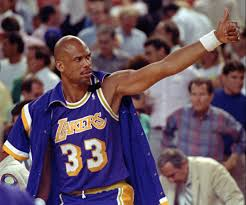
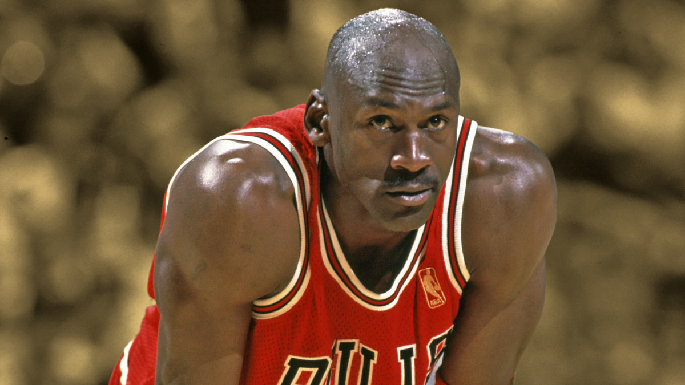

Jump to nr 2
Jump to nr 1
Bleacher report
Top 3 greatest Basketball players ever
3. Kareem Abdul-Jabbar

Kareem Abdul-Jabbar is widely regarded as one of the greatest basketball players in history, a cultural icon whose impact goes far beyond the court. Born Ferdinand Lewis Alcindor Jr. on April 16, 1947, in Harlem, New York City, he grew up tall, gifted, and deeply immersed in the game that would shape his life. By the time he was in high school, he was already recognized as a prodigy, standing over seven feet tall and dominating competition with a blend of size, skill, and intelligence. Abdul-Jabbar attended Power Memorial Academy in Manhattan, where he led his team to an astounding 71-game winning streak. He later played college basketball at UCLA under legendary coach John Wooden. During his time with the Bruins, he became a three-time NCAA champion and three-time Most Outstanding Player of the NCAA Tournament, establishing himself as one of the most dominant forces in college basketball history. His influence was so significant that the NCAA actually banned dunking during his college years, a rule change often referred to as the “Lew Alcindor Rule.” In 1969, he entered the NBA as the first overall pick of the Milwaukee Bucks. His immediate impact was undeniable—he won Rookie of the Year and, in just his second season, led the Bucks to an NBA championship. It was during this early stage of his professional career that he converted to Islam and changed his name to Kareem Abdul-Jabbar, reflecting his deepening commitment to faith and identity. Abdul-Jabbar’s career spanned two decades, primarily with the Milwaukee Bucks and later the Los Angeles Lakers. He was a central figure in the “Showtime” Lakers of the 1980s, teaming up with Magic Johnson to form one of the most electrifying dynasties in sports. With six NBA championships, two Finals MVP awards, and six league MVP awards—the most in NBA history—his resume speaks for itself. Perhaps his most iconic contribution to the game was the unstoppable “skyhook,” a graceful, high-arcing shot that no defender could reliably contest. This move became his trademark and a symbol of his dominance. By the time he retired in 1989, Abdul-Jabbar had scored more points than any player in NBA history, a record he held until LeBron James surpassed him in 2023. His longevity, consistency, and adaptability made him not just a star but a standard of excellence for future generations. Beyond basketball, Abdul-Jabbar has lived a life of purpose and intellect. He is a bestselling author, historian, activist, and cultural commentator. He has written extensively about African American history, social justice, and his own experiences navigating fame, faith, and identity in America. In 2016, he received the Presidential Medal of Freedom from President Barack Obama, an acknowledgment of his influence as both an athlete and public intellectual. Kareem Abdul-Jabbar’s legacy is multifaceted: he is remembered as a record-breaking athlete, a pioneer in cultural and social issues, and a man who used his platform to educate, inspire, and challenge society. His journey illustrates how greatness can extend far beyond the boundaries of sport.
2. LeBron James

LeBron James is widely regarded as one of the greatest basketball players of all time, a global icon whose influence extends well beyond the court. Born on December 30, 1984, in Akron, Ohio, James rose from a challenging childhood to become one of the most dominant and successful athletes in the history of sports. His career is defined not only by his remarkable athletic ability but also by his leadership, longevity, and impact on culture, business, and philanthropy.
From an early age, LeBron James showed extraordinary basketball talent. At St. Vincent–St. Mary High School in Akron, he became a national sensation, with his games often broadcast on television before he even turned professional. He was dubbed “The Chosen One” by Sports Illustrated while still a teenager, a label that carried immense pressure. In 2003, he was selected as the first overall pick in the NBA Draft by the Cleveland Cavaliers. Immediately, James proved he could live up to the hype, winning Rookie of the Year and setting the stage for a legendary career.
Throughout his time in the NBA, James has been celebrated for his versatility. Standing 6’9” and weighing around 250 pounds, he possesses a rare combination of size, strength, and agility. He can play virtually any position on the court, whether as a powerful forward, a skilled passer, or even a playmaking guard. His basketball IQ is often cited as one of his greatest assets, allowing him to see the game several steps ahead of opponents. Over the course of his career, he has built a résumé that includes four NBA championships, multiple MVP awards, and numerous All-Star appearances.
James’s career has also been defined by pivotal moments and bold decisions. In 2010, he famously announced on live television that he would leave the Cavaliers to join the Miami Heat, an event known as “The Decision.” The move drew both criticism and admiration but ultimately led to two NBA championships in Miami. In 2014, he returned to Cleveland, fulfilling his promise to bring a championship to his hometown franchise, which he accomplished in 2016. Later, James joined the Los Angeles Lakers, where he won his fourth title in 2020. His ability to succeed with different teams further cements his status as one of the greatest players in history.
Off the court, LeBron James has built an empire that extends far beyond basketball. He has become a successful entrepreneur, investor, and media figure. Through his company, SpringHill Entertainment, he produces films, television shows, and documentaries. He has also signed numerous endorsement deals with major brands, making him one of the most recognizable athletes worldwide.
Perhaps most importantly, James is deeply committed to philanthropy and social justice. In 2018, he opened the “I PROMISE School” in Akron, designed to support at-risk children with resources, mentorship, and opportunities for success. He has also been a vocal advocate for racial equality, education reform, and voting rights, using his platform to inspire positive change.
LeBron James’s story is one of perseverance, excellence, and impact. Whether measured by his records, his championships, or his influence off the court, he is more than just a basketball player—he is a cultural icon whose legacy will continue to inspire for generations.
1. Michael Jordan

Michael Jordan is often regarded as the greatest basketball player of all time, a global icon whose influence stretches beyond sports into culture, business, and inspiration. Born on February 17, 1963, in Brooklyn, New York, and raised in Wilmington, North Carolina, Jordan developed his passion for basketball at an early age. However, his journey to greatness was not without obstacles. Famously, he was cut from his high school varsity team as a sophomore, an event that fueled his drive to improve and shaped his relentless competitive spirit.
Jordan attended the University of North Carolina at Chapel Hill, where he played under coach Dean Smith. In 1982, as a freshman, he hit the game-winning shot in the NCAA Championship against Georgetown, announcing his arrival on the national stage. His combination of athleticism, work ethic, and clutch performance quickly made him a household name in college basketball. By 1984, he declared for the NBA Draft and was selected third overall by the Chicago Bulls.
From the moment Jordan entered the NBA, he electrified audiences with his soaring dunks, graceful footwork, and fierce determination. He won Rookie of the Year in 1985, and by the late 1980s, he had become the league’s most dominant player. His scoring ability was unmatched, earning him 10 scoring titles over his career. But his greatness went far beyond numbers—he was a competitor who thrived on the biggest stage, elevating his game when the pressure was highest.
The 1990s marked Jordan’s reign as the face of the NBA. With coach Phil Jackson and teammates like Scottie Pippen, he led the Chicago Bulls to two separate three-peat championships, winning six titles in eight years. Jordan’s performances in the Finals were legendary: six championships, six Finals MVP awards, and countless unforgettable moments, including the iconic “Flu Game” in 1997 and his final shot as a Bull in 1998 against the Utah Jazz. His impact was not just about winning but about how he won—with style, grace, and unshakable confidence.
Jordan briefly retired twice, once in 1993 to pursue a career in baseball after the death of his father, and again in 1999 after his second three-peat. He later returned for two seasons with the Washington Wizards, proving that even in his late thirties, he remained one of the most skilled players in the league.
Off the court, Jordan’s influence was equally transformative. His partnership with Nike led to the creation of Air Jordan sneakers, which became a cultural phenomenon and continue to shape sneaker culture and fashion today. He also became a global ambassador for basketball, helping expand the NBA’s popularity worldwide. His competitiveness, charisma, and excellence inspired millions of fans and athletes around the globe.
Since retiring, Jordan has remained active in business and sports ownership, becoming the majority owner of the Charlotte Hornets. He is also a philanthropist, supporting numerous causes in education, healthcare, and racial equality.
Michael Jordan’s legacy is defined not only by championships and accolades but also by his mindset: a relentless pursuit of excellence. He proved that greatness is built on hard work, resilience, and an unshakable belief in oneself, making him an enduring symbol of achievement across generations.